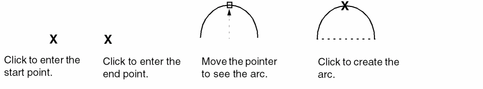

Creating an Arc in a Polygon
To create an arc in a polygon:
- In the layout window, from the Layers panel, select the layer on which you want to create an arc.
- Choose Create – Shape – Polygon.
-
Press
F3to open the Create Polygon form. - Select the Add an arc segment check box.
- Specify the net name and ROD settings as required.
-
Click on the canvas to indicate the start point, the end point, and a radius point on the arc.
Alternatively, you can specify the points of the arc using the Enter Points form.
If you have already entered some points of a polygon, the last point you clicked is the start point of the arc.
You can also use the Modify Corner command to curve the corner of a polygon.
Related Topics
Modifying Corners of a Polygon
Return to top